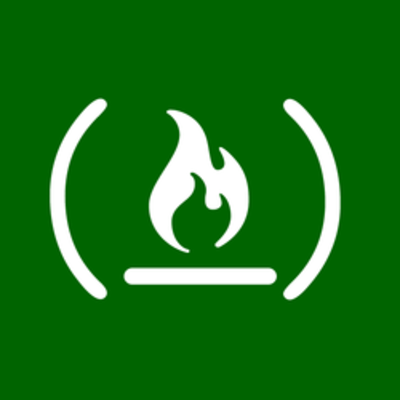
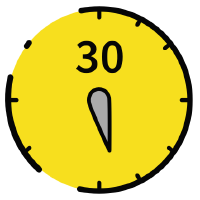

Chalarangelo Web developer

Introduction
I'm Angelos Chalaris, 25 years old, a web developer from Athens, Greece. Programming is not just a career path for me, but also a hobby and a passion of mine. I have a BSc in Computer Science and a MSc in Advanced Information Systems I started coding sometime around 2011, which is when I started studying Computer Science in the University of Piraeus. After getting my BSc, I studied for a MSc in Advanced Information Systems with a concentration in Advanced Software Development Technologies. I've worked with various technologies in the past, but recently I've taken an interest in web development and web applications.
Skills: HTML, CSS, JavaScript, Node.js, Sass/SCSS, React, jQuery, MySQL/MariaDB, Git
Work Experience
Frontend Engineer Skroutz S.A. Sep 2019 - Present
Software engineering role focused on JavaScript and ReactJS; everyday tasks included:
- Collaborating with experienced engineers and designers to build new products
- Improving existing features in order to maintain high user experience quality
- Building efficient and reusable front-end systems and communicating front-end best practices
- Optimizing workflows in order to minimize friction and speed up repetitive tasks
- Creating and adapting a codebase capable of supporting quick prototyping and development cycles
- Participating in usability tests, shipping experiments and studying metrics to identify flaws and enhance feature performance

IT Officer (Software Engineer) Greek Council for Refugees Mar 2018 - Aug 2019
Part of a team responsible for:
- Software and Hardware Installation, Update and Maintenance
- Windows Server, SQL Database (MySQL, MariaDB, SQL Server) Administration and Maintenance
- Full-Stack Development of Web-based Applications (Node.js, Express, MariaDB, Hyperapp/React)
- Content Management and Website Administration (Joomla)
Education

BSc Computer Science University of Piraeus 2011 - 2016
I studied various core concepts of programming and computer science, such as algorithms, network architecture, programming languages and artificial intelligence, while my focus was Software Technologies & Intelligent Systems. During this time, I learnt to code in C++, Java, C#, HTML, CSS, JavaScript, PHP and Prolog, developing various projects and applications, oftentimes integrating SQL databases. My thesis was on Business Process Intelligence, Process Mining and the ProM Framework (available here in Greek).
MSc Advanced Information Systems University of Piraeus 2016 - 2018
I studied Advanced Software Development Technologies, familiarizing with some more advanced programming and architecture concepts, especially ones that are used in web-based technologies and modern desktop applications. During this time, I explored web and mobile development, as well as UI/UX design in more depth, while I became more fluent in JavaScript and PHP and had a chance to work with Firebase and cloud patforms such as Amazon Web Services (AWS) and DigitalOcean. My dissertation was titled Design, Development and Application of Advanced User Interface Software for Web Applications (available here in Greek).

Full-Stack Certification freeCodeCamp 2017 - 2019
I have completed freeCodeCamp's Full-Stack developer certification, earning all 6 of the required certifications and learning essential skills for developing websites and web applications, using HTML, CSS, JavaScript and popular tools, such as React, Bootstrap and Express. More specifically, I have earned the following certifications:
Tech Talent School Certifications Found.ation 2017 - 2018
I have earned some of Tech Talent School's certifications, improving upon already acquired programming skills, as well as learning some soft skills which might be of use in my career. More specifically, I have earned the following certifications:
Udemy Courses Udemy 2017 - 2018
I have completed a lot of Udemy's courses, learning important skills and concepts for software and web development, as well as many other things related to computer science and programming. Some of the most relevant courses I have completed are as follows:
- Responsive Website Using HTML5, CSS3, JS And Bootstrap
- React JS and Redux - Mastering Web Apps
- Leveling up to ES6
- Node Package Manager Course: Build and Publish NPM Modules
- Vue JS 2.0 - Mastering Web Apps
- Beginner Full Stack Web Development: HTML, CSS, React & Node
- Intro to learning JavaScript web programming
- Learn to create a website from scratch online
- WordPress Development for Beginners
- MongoDB and Python: Quick Start
- Learn and Understand C++
- Learn Java Programming | Complete Course
- Complete Beginner's Guide to Learning PHP
Codecademy Courses Codecademy 2016 - 2017
I have completed some of Codecademy's courses, learning necessary skills for software and web development. More specifically, I have completed the following courses:
- Git
- HTML & CSS
- ReactJS: Part I & Part II
- jQuery
- AngularJS 1.X
- PHP
- Ruby
Projects & Open Source

30 seconds of code  JavaScript, ES6, Node.js, HTML
Dec 2017 - Present
JavaScript, ES6, Node.js, HTML
Dec 2017 - Present
I am the co-founder of the 30 seconds team and original creator of 30 seconds of code, a curated collection of over 300 modern JavaScript snippets, that can be easily copied into any new or existing project. The project has over 100 contributors and 35.000 stars on GitHub, while most of its systems utilize continuous integration tools to streamline the build and update process of the project. It's currently one of the most extensive learning resources for ES6 on GitHub. My core responsibilites as a mainter include, but are not limited to:
- Development, Indexing, Unit-testing, Maintenance and Documentation of a JavaScript (ES6) Codebase
- Development and Maintenance of Automation Tools and Continuous Integration (Node.js, Travis CI, Codacy)
- Content Management, Website Administration and Development (Node.js, GitHub Pages)
- Social Media Management (Facebook, Reddit)
- Package Deployment (npm, VSCode Marketplace)

30 seconds
JavaScript, Node.js, CSS, Sass/SCSS, HTML, React, Hyperapp
Mar 2018 - Present
I am the co-founder of the 30 seconds team, the team behind 30 seconds of code, 30 seconds of CSS, 30 seconds of Interviews and 30 seconds of React. I help curate and maintain all of these projects to different extents, participate actively in their development and contribute content from time to time.
mini.css
CSS, Sass/SCSS, HTML
Aug 2016 - Present
I am the creator and maintainer of mini.css, a minimal, responsive and easily customizable alternative to popular CSS frameworks like Bootstrap and Semantic UI. It utilizes modern technologies, techniques and design patterns, such as the Flexbox module, CSS variables and material design, while it's written in SCSS without the need for any Javascript code. It runs on most modern browsers and is actively maintained and updated frequently. It was also the basis for my Master's Dissertation, which explored the application of UI/UX design principles in web interface design.

Node Static Page Generator
Node.js, JavaScript
Nov 2017 - May 2018
I built the Node Static Page Generator as a simple tool for creating static websites. The tool supports static HTML generation from Markdown files and metadata injection via JSON files, while it allows users to fully customize it by tweaking its code. The project is not actively maintained anymore.
mocka
CSS, Sass/SCSS, HTML
May 2017 - Jun 2017
I built the mocka placeholder to be a very simple, yet elegant content placeholder, used to enhance user experience when a page is loading. Crafted with customization in mind, it is written in SCSS, can be altered easily to accommodate any and all needs and runs on all browsers. The project is not actively maintained anymore.
CodeIgniter RAP
PHP, CodeIgniter
Jun 2017 - Jul 2017
I built CodeIgniter RAP as a set of helper functions that can be used to create RESTful APIs using PHP. While built for CodeIgniter, these helper functions are not dependent on it, allowing it to be used with other frameworks. The project has been tested thoroughly and used on various college projects, but is not actively maintained anymore.
Bootstrap Extend
CSS, Sass/SCSS, Bootstrap, JavaScript, jQuery
Jul 2016 - Dec 2017
I built Bootstrap Extend as a simple extension of Bootstrap 3, adding certain new components that extend and enhance the framework's functionality. These components include lightboxes, toggle switches, collapse boxes and custom styles for some common elements. This project has been discontinued since the launch of Bootstrap 4.

HTML5 Template Generator
HTML, JavaScript, jQuery
Jun 2016 - May 2017
I built the HTML5 Template Generator as a replacement tool for all the boilerplates available online, so that anyone can quickly and easily create a simple HTML5-compliant page, without having to go through all the boring stuff. It supports exporting the templates to Codepen and JSFiddle, as well as defining a plethora of properties and generating certain framework boilerplates. The project is not actively maintained anymore.
Demos & Smaller Projects
JavaScript, Node.js, React, HTML, CSS, Sass/SCSS
Jun 2016 - Present
I have built various demos and toy projects over the years. Here are some of the most interesting:
- I've tinkered with progressive web apps for a long time, producing a handful of demos, such as Mock PWA, Autumn Blog and PWApp Demo.
- I have dabbled in WebSockets a little bit, creating Cows.js, a simple chat platform powered by React.
- One of my earliest demos is Starclock-js, a beautiful astronomical clock built with JavaScript/jQuery, HTML and CSS.
- I built Reactor back in the days before create-react-app was the de facto choice for kickstarting React projects. It's a simple set of Bash/Batch scripts for creating a React project without having to set up everything yourslef.
- I've tried my hand at simple interpreters and parsers, producing Parse-MD.js for Markdown and brainsource.js for brainf**k, both written in JavaScript.
- While my experience with Python is quite limited, I have created a few demos, such as Unscrape, a simple image scraper for Unsplash, and Multisort, a sort of joke sorting algorithm.
Writing
I have been writing on Medium for a while, covering various programming topics, mostly focused around web development and design. I am currently a writer for Hackernoon, FreeCodeCamp and The Startup. Some of my most popular stories include:


Community Contributions
Stack Overflow
Sep 2012 - Present
I actively participate in the Q&A site Stack Overflow and I currently have over 4000 reputation points and a bronze tag badge in JavaScript. Most of my questions and answers are in the JavaScript, HTML, jQuery and CSS tags. Some of my top answers include:
Codewars
Nov 2017 - Present
I actively participate in the coding challenge website Codewars and I currently have over 2500 honour points (3kyu). Most of my Kata solutions are written in JavaScript and Node.js.
Hashnode
Oct 2016 - Present
I am somewhat active on Hashnode, a social network for developers, sharing short stories and articles about my experience with certain tools and projects.
Other Communities Jun 2015 - Present
I have actively participated in Sphere Online Judgle (SPOJ) in the past, ranking among the top 5000 users, as well as CodinGame, reaching level 10.